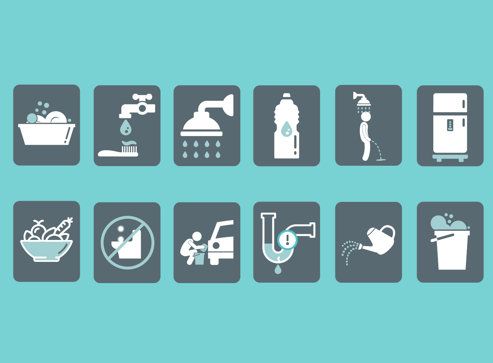

Você sabe como a água do mundo é distribuída?
Nem toda a água do mundo é salgada, mas a grande maioria sim. Conforme as tabelas abaixo, nota-se que apenas 2,5% da água do planeta é doce, e desses 2,5%, 68,9% estão congelados, dos 31,10% que estão no estado líquido, apenas 4% está na superfície. Portanto, economize água!
Do Total de Água do planeta:
| Água salgada |
Água doce |
| 97,5% |
2,5% |
Do Total de Água doce do planeta:
| Água Congelada |
Água líquida |
| 68,9% |
31,10% |
Do Total de Água doce líquida do planeta:
| Água Subterrânea |
Água Superficial |
| 96% |
4% |
Beleza, mas como economizar água?
Algumas dicas para economizar água:

- Fechar a torneira ao escovar os dentes
- Demorar menos tempo no banho
- Lavar o carro com um balde
- Fazer xixi no banho
- Não dar descarga à toa
Página inicial